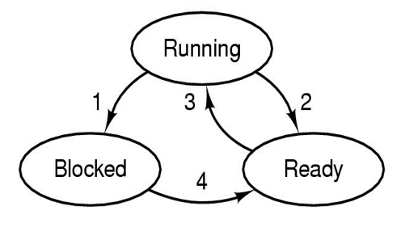
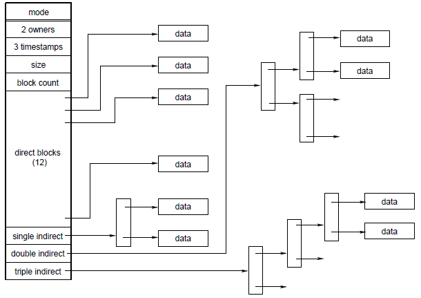
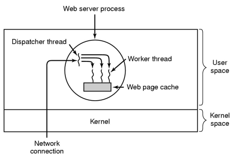
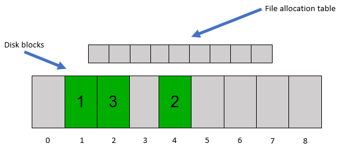

Information text
In this section you will match pairs that are the most closely related. Each correct pair earns of the marks available for the question, where
is the number of pairs to match.
For each question in this section, classify the overall statement as True if the statement is generally true, or False if the statement (or a component of it) is false.
You will receive one mark for each correct classification, and lose one mark for each incorrect
classification. You gain zero marks for each question left unclassified.
On a uniprocessor machine, it is more efficient to block and context switch than to spin (busy-wait) on a lock, even if the context switching overhead is very high.
A frame table is not required to manage free frames when using an inverted page table as virtual address translation and free frame management is combined into the one data structure.
An I/O-bound process spends a significant fraction of its execution time blocked waiting for I/O. One can reduce the overall execution time of the application by using user-level threads to overlap the application's blocking I/O with its execution.
In the user mode of the microprocessor, only the application's virtual memory is accessible to the processor.
A hypothetical i-node-based file system consists of i-nodes with 10 direct addresses of blocks and no addresses of indirect blocks. Each direct address is a 32-bit integer, and the block size is 1KiB. This file system only supports files with a maximum size of 10KiB.
Applications running as the root user under UNIX (or administrator under Windows XP/Vista/7/8/10) all run in the processor's privileged mode.
A context switch between user-level threads (also termed a thread switch), can be implemented by an assembly language function called from C that pushes a subset of the registers onto the current stack, saves the current stack pointer, and then sets the stack pointer to the target thread, and restores the target's registers.
Multi-threaded applications (i.e. user-level code) can avoid race conditions by disabling and enabling interrupts.
The traditional UNIX scheduler uses priorities to favour I/O-bound processes over CPU-bound processes. It fails to adjust when CPU-bound processes become I/O-bound and vice versa.
Because the operating system runs in privileged mode, the operating system can safely use the memory pointers provided by applications (via the arguments to system calls) just like in-kernel memory pointers.
Adding journaling to a file system (where the journal is co-located on the same device as the file system) improves reliability at the expense of increasing the number of writes to the device.
Dining philosophers can avoid deadlock using a single lock for the entire table.
The minimum virtual-memory page size available for use by the operating system is determined by the properties of the underlying hardware architecture.
It is possible to construct a time-sharing system able to withstand malicious applications on a computer architecture possessing only base and limit registers for memory management.
On a multiprocessor machine, a single ready queue in the operating system provides automatic load balancing across CPUs.
An operating system can enforce security by putting security checks in the standard C-library.
A typical i-node-based UNIX file system features differing levels of indirection (levels of indirect blocks) depending on the offset of access to the file. File access performance would be improved for small files if the file system was simplified to use three levels of indirection for all offsets in the file.
One deadlock prevention method is to release all locks held by a thread when the thread finds a lock that it requires is held by another thread. This method prevents deadlock, but not necessarily livelock.
In a system using page-based virtual memory, increasing the page size will generally increase the TLB miss rate.
A process and the operating system kernel share the same stack so they both can execute a high-level language like the C programming language.
Page-based virtual memory using a single page size is likely to suffer from external fragmentation in main memory.
Semaphores can be used to implement mutually exclusive execution in critical sections in a multi-threaded program by initialising the semaphore count to zero.
Application multi-threading provided by kernel-provided threads can have higher overheads (i.e. the time it takes to execute individual operations) than user-level threads as thread management (such as creation, and blocking/unblocking) requires a system call into the operating system.
When an application performs a series of small file system writes, having the operating system contiguously allocate multiple blocks on the initial write (and occasionally on subsequent writes) can improve file system performance compared to allocating a block at a time.
The size of an inverted page table is determined by the virtual address space size of a process, and is unrelated to the size of physical memory.
A buffer cache improves performance by buffering writes to disk, allowing the application to continue computation while buffers are written to the disk in the background. Meta-data and data writes are generally treated equally and simultaneously flushed to disk periodically.
Condition variables are used to manage blocking and waking within critical sections protected by semaphores.
In a system using page-based virtual memory, increasing the page size will generally decrease the working set size of an existing application.
Implementing a spinlock with an atomic test-and-set instruction avoids the issue of busy waiting.
On a microprocessor with no privileged mode, an operating system can implement resource allocation policies, but not enforce them.
Co-operative (non-preemptive) multitasking can result in a non-responsive system if an application has an endless loop.
A system uses a resource management policy that is potentially prone to starvation (e.g. shortest job first scheduling). When starvation occurs, the whole system makes no progress.
Applications can benefit from running on multi-processors when they are implemented to use multi-threading provided by kernel-level threads, but not user-level threads.
Multi-tasking can improve system utilisation for I/O-bound workloads by overlapping I/O with execution of other ready applications.
Application multi-threading implemented entirely at user-level (i.e. user-level threads) can be used to take advantage of multiple processors to increase performance, even in the situation of a single runnable process.
File systems based on indexed allocation (i.e. i-node-based file systems) have good random access performance.
Compared to polled I/O, interrupt-driven I/O is preferable when there is no delay between requesting something from a device and the device providing the response.
File systems based on contiguous allocation are suitable for read-only media such as optical disks (DVDs and CDs).
In a typical UNIX file system, such as ext2fs, the attributes of the file (e.g., file owner, size, and creation time) are stored in the directory entry.
Banker's algorithm can be used to avoid competing processes deadlocking without requiring any knowledge of their resource requirements in advance.
When choosing a victim for page replacement, a clean page is faster to replace than a dirty page.
Every access to an application virtual address is translated to a physical address using the information in a page table. The processor itself may cache a subset of the translation information in the translation look-aside buffer (TLB).
A group of processes are livelocked if they are all in the blocked state, and are making no effective progress.
Spatial locality contributes to virtual memory system efficiency, but temporal locality does not.
The following synchronised code ( inc() ) is deadlock free when called by multiple threads concurrently. Note: inc() is the only function that acquires count_lock.
int count;
void inc()
{
lock_acquire(count_lock);
count = count + 1;
lock_release(count_lock);
}
In a multi-threaded environment, local variables declared within a function have to be synchronised as they are allocated on a stack shared between all the threads.
Application multi-threading supported by user-level threads features a per-thread user-level stack and a 1-to-1 corresponding per-thread in-kernel stack.
A file system using linked-list disk allocation (also termed chained allocation) provides poor random access performance.
Round-robin scheduling gives each ready process (or thread) a turn to execute for a timeslice length of time. A short timeslice provides good interactive response times at the expense of more overhead due to more frequent context switching.
General purpose schedulers aim to improve interactivity and I/O performance by favouring I/O-bound processes (and threads) over CPU-bound processes (and threads). This improvement for I/O-bound processes comes with the disadvantage of dramatically reducing the CPU available to CPU-bound processes (and threads).
In this section you will match pairs that are the most closely related. Each correct pair earns of the marks available for the question, where
is the number of pairs to match.
An operating system implements a virtual to physical mapping using a two-level page table.
Each node in the page table (both root and leaf) has 1024 entries. The page size is 4KiB.
For each set of the four virtual addresses (in hexadecimal) below, rank each set in terms of the minimum memory required by the page table itself to store virtual to physical mappings to cover the specific set. Rank the sets from the smallest page table (1st) to the largest (4th).
0x12045ffa, 0x12845ffc, 0x12c45000,0x7ffffff0 | |
0x12045ffa, 0x12045ffc, 0x12145000,0x7ffffff0
| |
0x12045ffa, 0x12845ffc, 0x12945000,0x7ffffff0 | |
0x00000000, 0x00000004, 0x00000008, 0x0000000a |
For each resource, OS or processor feature listed below, indicate whether it is accessible in kernel (privileged) mode, user mode, or in both modes.
The registers used to transfer system call arguments. | |
An add instruction | |
An interrupt disabling instruction | |
The application's page table | |
The application's memory containing the standard C library | |
Hard disk drive controller registers | |
A TLB management instruction | |
Application memory |
The following is a diagram labelling the state transitions of the three state process model.

For each of the events listed below, match it the appropriate transition from the diagram.
The current process's timeslice expires. | |
A network packet arrives for a process that is waiting for network requests. | |
The scheduler picks the current process for its turn to execute. | |
A process attempts to acquire a mutex implemented with a semaphore and the mutex is not available. |
For each of the page replacement algorithms listed below, rank them in terms of their theoretical performance without regard to their practicality to implement. Rank them from best (1st) to worst (4th).
First-in first-out (FIFO) | |
Least recently used (LRU) | |
Clock | |
Optimal |
In a system that supports multi-threaded processes, for each attribute listed below, indicate whether it is a per process or a per thread attribute.
General purpose registers | |
Open file descriptors | |
Global variables | |
Local variables | |
The execution state, e.g. blocked, ready, running | |
Program counter | |
Stack | |
Virtual address space |
The following C library calls are either a system call or not a system call. Match the library call with its appropriate description.
The memcpy() function copies n bytes from memory area src to memory area dest.
read() attempts to read up to count bytes from file descriptor fd into the buffer starting at buf.
sprintf() produces output according to format. It writes to the character string str.
The strcmp() function compares the two strings s1 and s2.
strcmp() | |
sprintf() | |
read() | |
memcpy() |
Given the statements below, match them to whether they describe internal, external, or not fragmentation.
Space wasted due to space needed being smaller than space allocated. | |
Space wasted due to space needed being larger than space available between existing allocations. | |
Space wasted due to a bug that omits freeing memory. |
This section consists of choosing the most correct answer from the multiple choices available.
A correct answer earns 100% of the marks available. An incorrect answer subtracts of the marks available, where
is the number of choices available in the question.
For example, an incorrect answer to a questions with 5 choices would reduce your marks by of the marks available for the specific question.
No marks are awarded or subtracted for unanswered questions.
A hypothetical computer has a 48-bit virtual address space and a 32-bit physical address space. It also uses an 16KiB page size. On such a computer, a single level page table would need how many page table entries to support the entire virtual address space?
Below is a (somewhat compressed and simplified) snapshot of a TLB with 20 entries.
All mappings use 4 KiB page sizes. “VPN” is the virtual page number, “PFN” is the physical frame
number, “V” indicates if the entry is valid (1) or not (0), and “D” (Dirty) indicates if a valid entry
is writable (1) or not (0). All numbers are hexadecimal.
| VPN | PFN | D | V |
| 7 | 36 | 0 | 0 |
| 1 | 0 | 1 | 0 |
| 200 | 31a | 0 | 1 |
| 7fffe | 54 | 1 | 1 |
| 7fffd | 56 | 0 | 0 |
| 0 | 87 | 1 | 1 |
| 7ffff | 50 | 1 | 1 |
| 6 | 85 | 0 | 1 |
| 4 | 6d | 0 | 1 |
| 8 | 224 | 0 | 1 |
| 2 | 31a | 0 | 1 |
| b | 37 | 0 | 1 |
| 9 | 7a | 1 | 0 |
| 201 | 6d | 1 | 1 |
| 203 | aa | 0 | 1 |
| 5 | 7c | 1 | 1 |
| 202 | 4f | 1 | 1 |
| 3 | 36 | 0 | 1 |
| 7fffc | 97 | 1 | 1 |
| a | 55 | 0 | 0 |
If software attempts to access virtual address 0x00005765, choose the most accurate answer from the options below.
Below is a (somewhat compressed and simplified) snapshot of a TLB with 20 entries.
All mappings use 4 KiB page sizes. “VPN” is the virtual page number, “PFN” is the physical frame
number, “V” indicates if the entry is valid (1) or not (0), and “D” (Dirty) indicates if a valid entry
is writable (1) or not (0). All numbers are hexadecimal.
| VPN | PFN | D | V |
| 7 | 36 | 0 | 0 |
| 1 | 0 | 1 | 0 |
| 200 | 31a | 0 | 1 |
| 7fffe | 54 | 1 | 1 |
| 7fffd | 56 | 0 | 0 |
| 0 | 87 | 1 | 1 |
| 7ffff | 50 | 1 | 1 |
| 6 | 85 | 0 | 1 |
| 4 | 6d | 0 | 1 |
| 8 | 224 | 0 | 1 |
| 2 | 31a | 0 | 1 |
| b | 37 | 0 | 1 |
| 9 | 7a | 1 | 0 |
| 201 | 6d | 1 | 1 |
| 203 | aa | 0 | 1 |
| 5 | 6c | 1 | 1 |
| 202 | 4f | 1 | 1 |
| 3 | 36 | 0 | 1 |
| 7fffc | 97 | 1 | 1 |
| a | 55 | 0 | 0 |
If software attempts to access virtual address 0x00200a2f, choose the most accurate answer from the options below.
Below is a (somewhat compressed and simplified) snapshot of a TLB with 20 entries.
All mappings use 4 KiB page sizes. “VPN” is the virtual page number, “PFN” is the physical frame
number, “V” indicates if the entry is valid (1) or not (0), and “D” (Dirty) indicates if a valid entry
is writable (1) or not (0). All numbers are hexadecimal.
| VPN | PFN | D | V |
| 7 | 36 | 0 | 0 |
| 1 | 10 | 1 | 0 |
| 200 | 31a | 0 | 1 |
| 7fffe | 54 | 1 | 1 |
| 7fffd | 56 | 0 | 0 |
| 0 | 87 | 1 | 1 |
| 7ffff | 50 | 1 | 1 |
| 6 | 85 | 0 | 1 |
| 4 | 6d | 0 | 1 |
| 8 | 224 | 0 | 1 |
| 2 | 31a | 0 | 1 |
| b | 37 | 0 | 1 |
| 9 | 7a | 1 | 0 |
| 201 | 6d | 1 | 1 |
| 203 | aa | 0 | 1 |
| 5 | 6c | 1 | 1 |
| 202 | 4f | 1 | 1 |
| 3 | 36 | 0 | 1 |
| 7fffc | 97 | 1 | 1 |
| a | 55 | 0 | 0 |
If software attempts to access virtual address 0x00001123, choose the most accurate answer from the options below.
Below is a (somewhat compressed and simplified) snapshot of a TLB with 20 entries.
All mappings use 4 KiB page sizes. “VPN” is the virtual page number, “PFN” is the physical frame
number, “V” indicates if the entry is valid (1) or not (0), and “D” (Dirty) indicates if a valid entry
is writable (1) or not (0). All numbers are hexadecimal.
| VPN | PFN | D | V |
| 7 | 36 | 0 | 0 |
| 1 | 0 | 1 | 0 |
| 200 | 31a | 0 | 1 |
| 7fffe | 54 | 1 | 1 |
| 7fffd | 56 | 0 | 0 |
| 0 | 87 | 1 | 1 |
| 7ffff | 50 | 1 | 1 |
| 6 | 85 | 0 | 1 |
| 4 | 6d | 0 | 1 |
| 8 | 224 | 0 | 1 |
| 2 | 31a | 0 | 1 |
| b | 37 | 0 | 1 |
| 9 | 7a | 1 | 0 |
| 201 | 6d | 1 | 1 |
| 203 | aa | 0 | 1 |
| 5 | 6c | 1 | 1 |
| 202 | 4f | 1 | 1 |
| 3 | 36 | 0 | 1 |
| 7fffc | 97 | 1 | 1 |
| a | 55 | 0 | 0 |
If software attempts to access virtual address 0x7fffffff, choose the most accurate answer from the options below.
Bill and Ben are two threads that execute the functions of the same name below respectively. Bill and Ben are prone to deadlock. Identify the function calls in Bill and Ben where they end up deadlocked if they deadlock.
Each line of code in each function has a line number to help you identify the location of deadlock.
void bill()
{
1: lock_acq(&file1)
2: lock_acq(&file2)
/* write to file1 and file2 */
3: lock_rel(&file1)
/* un-critical part */
4: lock_acq(&file1)
5: lock_acq(&file3)
/* write to all three files */
6: lock_rel(&file1)
7: lock_rel(&file2)
8: lock_rel(&file3)
}
void ben()
{
1: lock_acq(&file1)
2: lock_acq(&file3)
/* write to file1 and file3 */
3: lock_rel(&file3)
4: lock_rel(&file1)
/* un-critical part */
5: lock_acq(&file2)
6: lock_acq(&file1)
7: lock_acq(&file3)
/* write to all three files */
8: lock_rel(&file2)
9: lock_rel(&file1)
10: lock_rel(&file3)
}
Below is a (somewhat compressed and simplified) snapshot of a TLB with 20 entries.
All mappings use 4 KiB page sizes. “VPN” is the virtual page number, “PFN” is the physical frame
number, “V” indicates if the entry is valid (1) or not (0), and “D” (Dirty) indicates if a valid entry
is writable (1) or not (0). All numbers are hexadecimal.
| VPN | PFN | D | V |
| 7 | 36 | 0 | 0 |
| 1 | 0 | 1 | 0 |
| 200 | 31a | 0 | 1 |
| 7fffe | 54 | 1 | 1 |
| 7fffd | 56 | 0 | 0 |
| 0 | 87 | 1 | 1 |
| 7ffff | 50 | 1 | 1 |
| 6 | 85 | 0 | 1 |
| 4 | 6d | 0 | 1 |
| 8 | 224 | 0 | 1 |
| 2 | 31a | 0 | 1 |
| b | 37 | 0 | 1 |
| 9 | 7a | 1 | 0 |
| 201 | 6d | 1 | 1 |
| 203 | aa | 0 | 1 |
| 5 | 6c | 1 | 1 |
| 202 | 4f | 1 | 1 |
| 3 | 36 | 0 | 1 |
| 7fffc | 97 | 1 | 1 |
| a | 55 | 0 | 0 |
If software attempts to access virtual address 0x0000a257, choose the most accurate answer from the options below.
In most UNIX file systems, every file has an index block, called an i-node, which is used to store
information about the file as well as pointers to data blocks, as shown in the diagram below.

Given 1024-byte blocks and 4-byte block numbers, what is the range of
file offsets that will result in data blocks being accessed via the single indirect block?
A typical implementation of round robin scheduling uses a queue-based data structure to keep track of the ready processes waiting to run.
In a hypothetical system, we replaced the queue with an almost-random choice from the set of ready processes.
A process in the set is unlucky and is never chosen to run. What best describes the situation that the process is experiencing.
The following program uses the fork() system call to create new processes. Running the program results in "Hello World" being printed how many times?
main()
{
fork();
fork();
fork();
printf("Hello World\n");
}
The reference string below is a process's list of references to specific page numbers in the order they are accessed.
1,2,3,4,5,1,2,3,4,5
The process first accesses page 1, then page 2, then page 3, and so forth.
The process only has four frames of memory available. Demand paging is used within those four frames to allow the process to run to completion.
If the page replacement algorithm is optimal, how many page faults are triggered in the execution of the process?
The following diagram shows the structure of a multi-threaded web server. The web server reads files via the read() system call based on the requests from many concurrent web clients.

Select the best answer below that indicates which threading implementation would provide the best overall performance of the web server.
The following are two different implementations of a multiprocessor spinlock: spinlock_acquire_A and spinlock_acquire_B.
void spinlock_acquire_A (volatile lock_t *l)
{
while (*l == BUSY || test_and_set(l)) ;
}
void spinlock_acquire_B (volatile lock_t *l)
{
while (test_and_set(l)) ;
}
Select all the correct statements below.
OS/161 featured an extra process state called a ZOMBIE. It existed as not all data structures associated with the current process can be freed on process exit. Some data structures need to be freed by a process other than the one exiting.
Select all the in-kernel cleanup operations listed below that can be performed before becoming a ZOMBIE.
The diagram below shows a representation of a FAT file system. It shows a hypothetical disk consisting of 9 blocks, and an empty file allocation table with one entry per disk block.

The diagram shows a green file consisting of 3 blocks. The first block of the file is labelled 1, the second block 2, and so fourth.
Select all the options below that together would form the content required in the file allocation table to represent the green file. Note: X,Y indicates that the FAT entry in location X contains the value Y. NULL is represented by -1.
Two of the values kept in a UNIX inode are file size (F) and block count (B). File size is the maximum offset that has been written to within the file. Block count is the number of disk blocks consumed by the file system to provide the file.
Given a disk block size (S), how does the block count (B) relate
to the file size divided by the block size rounded up to the
nearest integer ?
Select all the true statements below.
A file system can use a bitmap stored on disk to manage the free disk blocks. Select all the statements below that are true.
A hypothetical system is in the state of thrashing. Select all the statements below that are true in this situation.